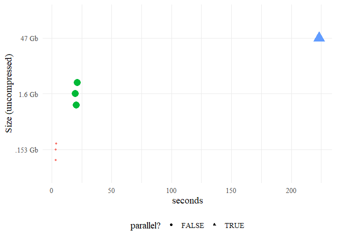

Introduction
The {rtweet} package spoils R users rotten… in the best possible way. The behind-the-scenes data carpentry is so seamless that the user doesn’t need to know anything about the horrors of Twitter data, which is pretty amazing. If you use {rtweet}, you owe Mike Kearney some serious gratitude/citations.
{tweetio} is not a competitor to {rtweet}, but it definitely attempts to emulate its data frame schema because…
- It’s incredibly easy to use.
- It’s more efficient to analyze than a key-value format following the raw data.
- It’d be a waste not to maximize compatibiltiy with tools built specifically around
{rtweet}’s data frames.
You bring the data,
{tweetio}gets them into R.
{tweetio} focuses on one thing: going from raw tweets to {rtweet}-style data frames (or other useful structures) as quickly and efficiently as possible. Whether the data came from the Twitter API, a vendor, or some other source, {tweetio}’s job is to get them into R.
Installation
You’ll need a C++ compiler. If you’re using Windows, that means Rtools.
Supported Data Inputs
- Twitter API streams: .json, .json.gz
- API to Elasticsearch data dump (JSON Array): .json, .json.gz
- API to Elasticsearch data dump (line-delimited JSON): .jsonl, .jsonl.gz
Supported Data Outputs
- CSV
-
.graphml via
{tweetgraph}integration
Usage
Simple Example
First, we’ll save a stream of tweets using rtweet::stream_tweets().
temp_file <- tempfile(fileext = ".json")
rtweet::stream_tweets(timeout = 15, parse = FALSE, file_name = temp_file)We can then pass the file path to tweetio::read_tweets() to efficiently parse the data into an {rtweet}-style data frame.
#> Rows: 362
#> Columns: 71
#> $ user_id <chr> "594234016", "1138555968273489920", "1...
#> $ status_id <chr> "1179209099667529728", "11792090996549...
#> $ created_at <chr> "Wed Oct 02 01:38:52 +0000 2019", "Wed...
#> $ screen_name <chr> "jim_tellez", "ViniciusdeJesu7", "Gett...
#> $ text <chr> "RT @NBCSBulls: For all the kids out t...
#> $ source <chr> "<a href=\"http://twitter.com/download...
#> $ reply_to_status_id <chr> NA, NA, NA, NA, NA, NA, NA, NA, NA, "1...
#> $ reply_to_user_id <chr> NA, NA, NA, NA, NA, NA, NA, NA, NA, "1...
#> $ reply_to_screen_name <chr> NA, NA, NA, NA, NA, NA, NA, NA, NA, "s...
#> $ is_quote <lgl> FALSE, FALSE, FALSE, FALSE, FALSE, FAL...
#> $ is_retweeted <lgl> FALSE, FALSE, FALSE, FALSE, FALSE, FAL...
#> $ hashtags <list> [<>, <>, <>, <>, <>, "HBDMingEr4Saint...
#> $ urls_expanded_url <list> [<>, <>, <>, <>, <>, <>, <>, <>, <>, ...
#> $ media_expanded_url <list> [<>, "https://twitter.com/ViniciusdeJ...
#> $ mentions_user_id <list> ["423540866", <>, "105491374377405235...
#> $ mentions_screen_name <list> ["NBCSBulls", <>, "hozuki_app", <>, "...
#> $ lang <chr> "en", "pt", "ja", "es", "und", "th", "...
#> $ quoted_status_id <chr> NA, NA, NA, NA, NA, NA, NA, NA, NA, NA...
#> $ quoted_text <chr> NA, NA, NA, NA, NA, NA, NA, NA, NA, NA...
#> $ quoted_created_at <chr> NA, NA, NA, NA, NA, NA, NA, NA, NA, NA...
#> $ quoted_source <chr> NA, NA, NA, NA, NA, NA, NA, NA, NA, NA...
#> $ quoted_favorite_count <int> NA, NA, NA, NA, NA, NA, NA, NA, NA, NA...
#> $ quoted_retweet_count <int> NA, NA, NA, NA, NA, NA, NA, NA, NA, NA...
#> $ quoted_user_id <chr> NA, NA, NA, NA, NA, NA, NA, NA, NA, NA...
#> $ quoted_screen_name <chr> NA, NA, NA, NA, NA, NA, NA, NA, NA, NA...
#> $ quoted_name <chr> NA, NA, NA, NA, NA, NA, NA, NA, NA, NA...
#> $ quoted_followers_count <int> NA, NA, NA, NA, NA, NA, NA, NA, NA, NA...
#> $ quoted_friends_count <int> NA, NA, NA, NA, NA, NA, NA, NA, NA, NA...
#> $ quoted_statuses_count <int> NA, NA, NA, NA, NA, NA, NA, NA, NA, NA...
#> $ quoted_location <chr> NA, NA, NA, NA, NA, NA, NA, NA, NA, NA...
#> $ quoted_description <chr> NA, NA, NA, NA, NA, NA, NA, NA, NA, NA...
#> $ quoted_verified <lgl> TRUE, TRUE, TRUE, TRUE, TRUE, TRUE, TR...
#> $ retweet_status_id <chr> "1179184219416858624", NA, "1178582869...
#> $ retweet_text <chr> "For all the kids out there, come meet...
#> $ retweet_created_at <chr> "Wed Oct 02 00:00:00 +0000 2019", NA, ...
#> $ retweet_source <chr> "<a href=\"https://about.twitter.com/p...
#> $ retweet_favorite_count <int> 57, NA, 1358, NA, 1, 3, NA, NA, NA, NA...
#> $ retweet_retweet_count <int> 11, NA, 334, NA, 1, 5, NA, NA, NA, NA,...
#> $ retweet_user_id <chr> "423540866", NA, "1054913743774052352"...
#> $ retweet_screen_name <chr> "NBCSBulls", NA, "hozuki_app", NA, "An...
#> $ retweet_name <chr> "Bulls Talk", NA, "<U+30A2><U+30D7><U+30EA><U+300E><U+9B3C><U+706F><U+306E><U+51B7><U+5FB9>~<U+5730><U+7344><U+306E><U+30D1><U+30BA><U+30EB><U+3082><U+541B><U+6B21>...
#> $ retweet_followers_count <int> 22596, NA, 42949, NA, 118, 291, NA, NA...
#> $ retweet_friends_count <int> 22596, NA, 42949, NA, 118, 291, NA, NA...
#> $ retweet_statuses_count <int> 25505, NA, 314, NA, 2565, 7298, NA, NA...
#> $ retweet_location <chr> NA, NA, NA, NA, NA, NA, NA, NA, NA, NA...
#> $ retweet_description <chr> "Home for all 82 Bulls games", NA, "<U+30A2><U+30D7>...
#> $ retweet_verified <lgl> TRUE, TRUE, FALSE, TRUE, FALSE, FALSE,...
#> $ place_url <chr> NA, NA, NA, NA, NA, NA, NA, NA, NA, NA...
#> $ place_name <chr> NA, NA, NA, NA, NA, NA, NA, NA, NA, NA...
#> $ place_full_name <chr> NA, NA, NA, NA, NA, NA, NA, NA, NA, NA...
#> $ place_type <chr> NA, NA, NA, NA, NA, NA, NA, NA, NA, NA...
#> $ country <chr> NA, NA, NA, NA, NA, NA, NA, NA, NA, NA...
#> $ country_code <chr> NA, NA, NA, NA, NA, NA, NA, NA, NA, NA...
#> $ bbox_coords <list> [<>, <>, <>, <>, <>, <>, <>, <>, <>, ...
#> $ name <chr> "Jim Téllez", "Vinicius de Jesus", "H*...
#> $ location <chr> "CIUDAD DE CAGADAS ", NA, NA, NA, NA, ...
#> $ description <chr> "GOATFuckers INC. 666 \U0001f918\U0001...
#> $ url <chr> NA, NA, NA, "https://instagram.com/mir...
#> $ protected <lgl> FALSE, FALSE, FALSE, FALSE, FALSE, FAL...
#> $ followers_count <int> 161, 0, 1, 245, 160, 57, 1008, 125, 12...
#> $ friends_count <int> 98, 12, 6, 280, 58, 84, 1408, 668, 129...
#> $ listed_count <int> 6, 0, 0, 1, 2, 0, 65, 9, 1, 3, 12, 16,...
#> $ statuses_count <int> 17430, 5, 133, 28109, 57983, 1285, 409...
#> $ favourites_count <int> 385, 5, 265, 9153, 52200, 930, 520, 23...
#> $ account_created_at <chr> "Wed May 30 02:38:00 +0000 2012", "Tue...
#> $ verified <lgl> FALSE, FALSE, FALSE, FALSE, FALSE, FAL...
#> $ account_lang <chr> NA, NA, NA, NA, NA, NA, NA, NA, NA, NA...
#> $ profile_banner_url <chr> "https://pbs.twimg.com/profile_banners...
#> $ profile_image_url <chr> "http://pbs.twimg.com/profile_images/1...
#> $ timestamp_ms <chr> "1569980332663", "1569980332660", "156...
#> $ contributors_enabled <lgl> TRUE, TRUE, TRUE, TRUE, TRUE, TRUE, TR...Scaling Up
In reality, we’re more interested in handling larger data sets. Here’s a larger file obtained using rtweet::stream_tweets() that has been compressed to an 18 Mb .gz file (153 Mb uncompressed).
How long does that take?
Vendor Data
Vendors seem to love storing social media data in Elasticsearch databases, meaning that the data collected from APIs is stored inside a nested JSON object named "doc". "doc" is typically embedded in a ton of system metadata, most of which you probably don’t care about.
This has three unfortunate consequences:
- Packages that were purpose-built to work directly with the Twitter API aren’t going to play along with your data.
- You’re going to waste most of your time (and memory) getting data into R that you’re not going to use.
- The data are very tedious to restructure in R (lists of lists of lists of lists of lists…).
{tweetio} solves this by parsing everything at the C++ level, but only returning the actual tweet data to R.
How long does that take?
Bulk Processing
While maybe not “big” data, handling millions of lines of JSON spread across dozens of files in R isn’t exactly a picnic. To handle this situation, the current implementation uses future.apply::future_lapply() (if available) to process each file in parallel before collapsing the resulting data frames via data.table::rbindlist().
all_vendor_files consists of 6 Gb (47 Gb uncompressed) spread across 30 files, which we can still process using tweetio::read_tweets().
How long does that take?
Benchmarks
res <- do.call(rbind, list(big_rtweet_time, single_vendor_time, bulk_time))
library(dplyr)
library(ggplot2)
res %>%
mutate(file_size = paste(expr, "Gb"),
time = time / 1e+09,
`parallel?` = expr == "47") %>%
ggplot(aes(x = file_size, y = time,
color = file_size, size = as.numeric(expr), shape = `parallel?`)) +
ggbeeswarm::geom_quasirandom() +
guides(color = FALSE, size = FALSE) +
labs(x = "Size (uncompressed)", y = "seconds") +
coord_flip() +
theme_minimal(base_size = 14, base_family = "serif") +
theme(legend.position = "bottom")
Until Rtools 4.0 hits (or the simdjson library decides to relax its C++17 requirement), I’m not sure how we can go much faster while maintaining cross-platform compatibility. That said, if C++ is your mother tongue (and you see room for optimization), please don’t hesitate to contribute.
Acknowledgements
{tweetio} uses a combination of C++ via {Rcpp}, the rapidjson C++ library (made available by {rapidjsonr}), and R’s secret weapon: {data.table}.
Major inspiration from {ndjson} was taken, including its use of Gzstream.
Parallel processing of multiple files is (currently) handled by {future} and [{future.apply}]((https://cran.r-project.org/web/packages/future.apply/index.html), if available.